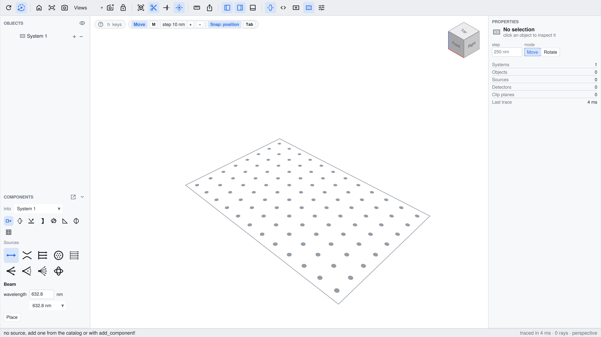
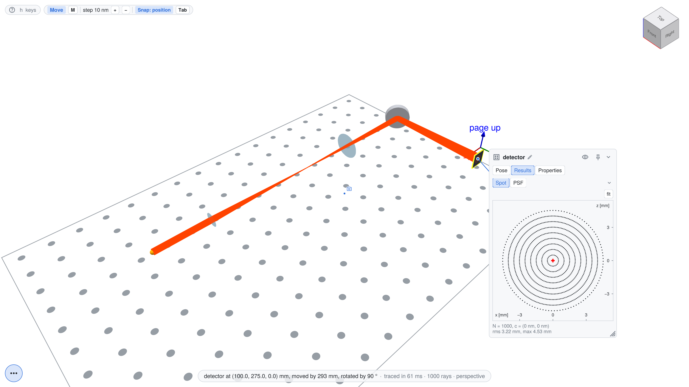

Building a setup on an empty table
This example starts without a setup: live_view opens an empty System() as an application window, in which the sources and components are placed from the catalog. The setup that was built in the window is then written as a script, which runs without the window.

The full script can be found here. Running it from the REPL opens the interactive window.
Opening the empty table
A system without components and a view without a source are enough:
using BeamletOptics, BeamletOpticsGUI, GLMakie
system = System()
gui = live_view(system; layout = :app, size = (1600, 900), table = true, snap = true,
labels = Dict(system => "Beam expander"))
display(gui)layout = :app arranges the window like an application: the toolbar at the top, the object tree and the catalog "Components" in the left sidebar, the inspector with the card of the selection in the right one and the status bar at the bottom. The edges of the sidebars are dragged with the mouse to resize them. table = true shows an optical table with holes at a distance of 25 mm, and with snap = true, a component that is placed or dragged with the mouse snaps onto the holes and onto the beams, see Aligning on the table and to the beams. The entry of labels names the system in the object tree and in the line "into" of the catalog.
Building the setup in the window
The setup of this page is a beam expander: two lenses at a distance of the sum of their focal lengths, a mirror that folds the beam, and a detector.
- The source. The icons at the top of the catalog select a group, "Sources" at first, the tiles below it the entry. The form takes its numbers, e.g. the wavelength and the diameter of a collimated source. "Place" puts the first source of an empty view at the origin, pointing along +y.
- The components. A lens of the group "Lenses" is attached to the mouse after "Place" and moves in the plane of the table, at the height of the beam. A click drops it; near the beam it snaps onto it. Mirrors and the detector are placed the same way.
- The poses. A click selects a component, a drag moves it. The key
mswitches to the rotate mode, e.g. to turn the mirror by 45°, and the boxes of the page "Pose" of its card take exact values. "onto beam" and "face beam" on the card align a component to the nearest beam. - The result. After each change the system is solved again. A click on the detector shows its card in the inspector, which opens on the page "Results" with the spot diagram.
Ctrl+Z takes a step back, Delete removes the selected component, and the page "Edit" of a card builds a component from the catalog again with other values, e.g. a lens with other radii. See Adding and removing components for the catalog and the placement.

Further systems are added with the tool "System" of the toolbar, e.g. a receiver that shares the mirror with this system, see Several systems.
The same from code
The figure above is made by a script that does what the catalog does. add_component! adds a source or a component to the system and solves it again. With code, the constructor call as Julia code, the view knows how the object was built, like for an entry of the catalog:
add(obj, code, label) = add_component!(gui, obj; code, label, select = false)
laser = add(CollimatedSource([0.0, 0, 0], [0.0, 1, 0], 5e-3, 632.8e-9),
"CollimatedSource([0.0, 0, 0], [0.0, 1, 0], 5e-3, 632.8e-9)", "laser")
lens1 = add(ThinLens(50e-3, -50e-3, 12.7e-3, 1.5), "ThinLens(50e-3, -50e-3, 12.7e-3, 1.5)", "lens1")
lens2 = add(ThinLens(100e-3, -100e-3, 25.4e-3, 1.5), "ThinLens(100e-3, -100e-3, 25.4e-3, 1.5)", "lens2")
mirror = add(RoundPlanoMirror(25.4e-3, 6e-3), "RoundPlanoMirror(25.4e-3, 6e-3)", "mirror")
detector = add(Detector(15e-3), "Detector(15e-3)", "detector")Every object is added as its constructor builds it and moved afterwards, with the verbs of BeamletOptics that take the window as first argument, see Scripting the live view. The focal lengths of the lenses are 50 mm and 100 mm, hence they are 150 mm apart and widen the beam by a factor of 2:
translate_to3d!(gui, lens1, [0, 50e-3, 0])
translate_to3d!(gui, lens2, [0, 200e-3, 0])
translate_to3d!(gui, mirror, [0, 275e-3, 0])
rotate3d!(gui, mirror, [0, 0, 1], deg2rad(45))
translate_to3d!(gui, detector, [100e-3, 275e-3, 0])
rotate3d!(gui, detector, [0, 0, 1], deg2rad(90))
select!(gui, detector)
wait_solve(gui)The setup as a script
The tool "Script" of the toolbar and export_script write the setup as a script: the constructors and poses of the components and sources, the system, the solve_system! call and the live_view call. A label that is a valid name becomes the name of the variable. For the setup above:
export_script(gui);# Script of the live view: its systems, its sources and the view itself.
# An object without a known constructor is a comment: construct it there, in its pose when
# the view got it, and uncomment the lines that use it.
using BeamletOptics
# lens1 (Lens)
lens1 = ThinLens(50e-3, -50e-3, 12.7e-3, 1.5)
translate_to3d!(lens1, [0.0, 0.05, 0.0])
# lens2 (Lens)
lens2 = ThinLens(100e-3, -100e-3, 25.4e-3, 1.5)
translate_to3d!(lens2, [0.0, 0.2, 0.0])
# mirror (Mirror)
mirror = RoundPlanoMirror(25.4e-3, 6e-3)
rotate3d!(mirror, [0.0, 0.0, 1.0], 0.7853981633974483)
translate_to3d!(mirror, [0.0, 0.275, 0.0])
# detector (Detector)
detector = Detector(15e-3)
rotate3d!(detector, [0.0, 0.0, 1.0], 1.5707963267948966)
translate_to3d!(detector, [0.1, 0.275, 0.0])
system = System([lens1, lens2, mirror, detector])
# laser (CollimatedSource)
laser = CollimatedSource([0.0, 0, 0], [0.0, 1, 0], 5e-3, 632.8e-9)
solve_system!(system, laser)
# Live view
using BeamletOpticsGUI, GLMakie
gui = live_view(
system => laser;
labels = Dict(
lens1 => "lens1",
lens2 => "lens2",
mirror => "mirror",
detector => "detector",
laser => "laser",
)
)The first part runs with BeamletOptics alone, e.g. for an analysis without a window. A view that was built with the catalog gives the same kind of script; an object that the view started with is a comment in it, since its constructor is not known.